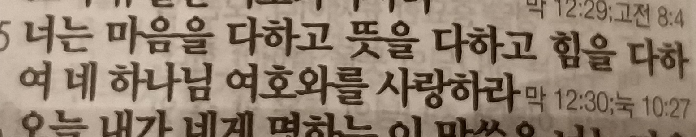

아프리치팀의 성경읽기
창세기
창세기 1장 ~ 12장
어제 성경의 큰 스토리를 창조/타락/구속 관점으로 풀어가는 학자들이 많다고 했는데.
(하나님이 세상을 창조하신후에 죄에 빠진 인간들을 구속해 나가시는 이야기)
또 다른 관점 중 하나는, 성경을 누가 왕이냐?를 다룬 이야기로 보는 관점도 있습니다.
하나님이 왕이시다를 일관되게 이야기 하고 있는 거죠.
그 관점으로 지금까지의 이야기를 리뷰해본다면.
하나님이 세상을 창조하시고, 아담에게 이 세상의 모든 권한을 주셨지만,
이 세상의 왕은 하나님이라는 사실을 선악과를 통해 주지시킵니다.
선악과를 볼때마다 누가 왕인지 기억하고 살라는 거죠.
하지만 사람들은 하나님을 왕으로 모시길 거부했고, 자기 스스로 왕이 되기로 했습니다.(3장)
그리고 스스로 왕이 되기로 결정한 “가인”과 그의 후손들의 이야기가 나옵니다. 힘센 사람들이 통치하는 세상의 역사입니다.(4장)
하지만 죽은 아벨 대신 주신 아들인 “셋”을 통해 하나님을 왕으로 모시는 사람들이 또 다른 역사를 이어갑니다.(5장)
힘있는 사람(네피림)이 통치하는 악이 가득찬 세상이 되고 온 세상이 타락하게 되자
이 세상을 홍수로 쓸어버리시고 진짜 왕은 하나님이라는 사실을 다시 드러내십니다.
사람들은 또다시 하나님을 대항하기 시작하는데 그 모습이 바벨탑 사건으로 나타납니다.(11장)
그들은 하나님에게 대항하기 위해 거대한 왕국을 만들고, 하늘에 닿을 만큼 높은 탑을 쌓아 올립니다.
(사람들에게 홍수라는 무서운 기억이 있어서, 하나님이 또다시 홍수로 심판을 하신다고 해도 거기에 살아남기 위해 높은 탑을 쌓았다는 해석도 있습니다 ㅎ)
하나님을 왕으로 인정하지 않는 사람들의 이야기는 인류 역사 속에서 이런 패턴으로 계속 이어집니다.
(페르시아제국, 헬라제국, 로마제국,,,, 중국,한국,모든 나라가 마찬가지)
참고로, 세계 4대 문명 발생지인 하나인 메소포타미아 문명의 모체가 바로 바벨문명이라고 합니다.
그리고 드디어 아브라함이 등장합니다.(12장)
하나님은 아브라함 한 사람을 선택하셔서, 아브라함을 시작으로 하나님이 왕이신 하나님의 나라를 세워가기 시작합니다.
그래서 아브라함에게 “너를 통해 모든 민족이 복을 받을 것이다”라고 이야기를 하시죠.(12:3)
아브라함을 통해 제대로 된 하나님 나라를 만들고, 그 나라를 중심으로 온 세상을 하나님 나라로 만들어 가겠다라는 하나님의 계획을 드러내십니다.
그리고 그 하나님의 나라가 지금 우리에게까지 온 것이죠.
앞으로 진행될 꽤 긴 스토리가 아브라함을 시작으로 한 하나님의 나라를 세워가는 과정입니다.
창세기 13장 ~ 23장
아브라함의 생애는 12장부터 23장까지 짧게 나오지만, 이후 세대로부터 계속해서 믿음의 조상으로 불립니다.
(사실, 아브라함은 별로 믿음이 없는 모습을 보여주기도 합니다 ㅋ)
아브라함의 생애를 생각하며, “믿음”에 대해 묵상할 수 있으면 좋겠네요^^
창세기 24장 ~ 40장
창세기 41장 ~ 45장
2018.4.9
제멋대로 자란 이기적이고 이간질하던 아이 요셉이 이집트의 정치지도자로 성장해서 가족의 화해를 이루는 이야기가 오늘 읽을 부분입니다. ^^
‘요셉은 칭찬만 받아야 하는가?’ 한번 생각해봅시다 ㅎㅎ
창세기 46장 ~ 50장
2018.4.10
하나님의 나라를 세우려고 하셨던 하나님께 위기가 닥쳐옵니다.ㅋ
아브라함을 택하시고, 또 이삭으로 약속을 이어가셨는데,
이삭의 두 아들(에서,야곱)은 부잣집에서 태어나 정신 못차리고 그냥 자기 삶을 살아갑니다.
야곱은 어린 시절에는 열등감에 아무 실체도 없는 장자의 명분에 집착하고,
청년때는 사랑에 빠져 여자만 보고 살다가,
가정을 이루고는 부를 축적해서 성공하고 싶어하고,
부를 축적한 후에는 가문을 일으키고 싶어 합니다.
중간중간 위기를 만날때마다 하나님을 찾긴 하지만, 필요에 의해서 형식적으로 하나님을 찾습니다.
지극히 평범한 사람의 모습이죠.
하지만 결국에는 하나님은 야곱을 하나님의 언약을 이어가는 사람으로 만들어 가십니다.
그리고, 그 후에 이어지는 요셉의 이야기는 한사람의 일대기를 쭉 써내려간 부분이라 비교적 쉽게 읽힙니다.
어린시절 하나님이 꿈으로 보여주신 약속을 믿고 온갖 역경을 이겨내고
마침내 가문의 수호신의 역할을 함으로써 그 꿈을 이뤄가는 이야기.
오늘 읽어보세요 ^^
창세기 돌아보기
2018.4.11
창세기는 성경 전체의 오프닝이고, 하나님이 이 세상을 바라보는 관점을 보여주고 있습니다.
창조 세상은 원래 이런 곳인데
타락 지금은 이렇게 변질되었어
구속 그래서 우리는 회복시켜 가야 해~~
우리가 세상을 바라보는 관점도 이 관점이 되어야 하겠죠 ㅎ
아브라함, 야곱, 요셉을 통해
하나님을 믿고 그 하나님과 교제함으로써 개인의 삶이 변화되는 것을 보여주었고
이제 이들을 시작으로 온 세상을 변화시켜 가심을 보여줍니다.
(지금도 진행중인 이야기)
출애굽기
출애굽기는 크게 네부분으로 나눠집니다.
- 모세의 등장 + 10가지 재앙
- 출애굽 + 광야생활
- 십계명 + 법
- 성막
각 부분은 장르가 다릅니다. 1,2는 역사서 3은 법조문 4는 성막을 만드는 설계서입니다.
그 장르를 생각하고 읽으면 좀 더 잘 읽을 수 있을 거에요 ^^
출애굽기 1장 ~ 5장
2018.4.12
70명으로 시작했던 야곱의 가족이 애굽(이집트) 전체를 위협할 만큼 기하급수적으로 그 수가 증가합니다.
바로(파라오)는 히브리민족(야곱의 후손들)을 노예로 만들어 억압하지만 그래도 그 수는 줄어들지 않습니다.
나쁜 상황 속에서도 하나님 나라의 백성의 수는 계속 증가합니다.
그리고 드디어 모세가 등장합니다.
참고로, 국가의 3요소는 국민, 영토, 주권이라고 중학교때 배우죠~ㅎㅎ(다들 기억나죠? ㅋ)
창세기 끝부분과 출애굽기 첫부분에서 하나님 나라의 국민을 만드셨음을 보여주고 있고
출애굽기 중간 부분에서는 십계명을 중심으로 법을 제정하심으로써 하나님 나라의 주권을 드러내십니다.
그리고 하나님은 그 국민들을 하나님 나라의 영토로 데려가십니다.
마침내 여호수아때 그 영토를 차지하게 되죠.(나중에 읽게 될꺼에요)
출애굽기는 국민, 영토, 주권을 가진 제대로된 하나님 나라를 만들어 가시는 과정의 본격적인 시작입니다.
출애굽기 6장 ~ 10장
2018.4.13
성경은 일차적으로는 그때 그 시대를 살고 있는 사람에게 하신 말씀이고(그래서 어렵죠ㅠㅠ),
그리고 또 오늘 우리에게 하시는 말씀입니다.
항상 이 두가지 관점을 유지하면서 성경을 읽기를 권합니다.
- 하나님은 그때 그 시대를 살고 있는 사람들에게 무슨 말씀을 하셨던걸까?
- 그리고 하나님은 지금 나에게 어떤 메세지를 주시려는걸까?
오늘은 10가지 재앙에 대한 이야기가 나오는데, 보통은 그냥 단순히 자연재해라고 생각하기 쉽습니다.
하지만 그것은 그때 이집트를 지배하고 있는 신적 세계관 전체를 무너뜨리고 하나님이 온 세상의 왕이심을 나타내는 행위였습니다.
각 재앙의 의미들을 공부해보면, 단순한 자연재해 이상의 큰 메세지가 있습니다.
요즘으로 따지자면 어떤걸까?
돈, 정치, 기업, 관습, 학벌, 외모,,,
우리 사회를 지배하고 있는 모든 것들을 단숨에 무너뜨리는거라 볼 수 있을것 같네요.
자 오늘은 10장까지 입니다 ^^
출애굽기 11장 ~ 15장
2018.4.14
오늘 히브리민족(야곱의 후손)은 드디어 홍해를 건너 이집트를 빠져나옵니다.
바다 한가운데로 길을 내신 하나님을 묵상하며,
우리의 혼란스러운 삶 가운데서도 길을 만드시는 하나님을 기대하며,
그 하나님을 따라가 봅시다!
오늘은 15장 까지입니다 ^^
출애굽기 16장 ~ 20장
2018.4.15
이스라엘 민족은 홍해를 건너고, 본격적인 광야생활이 시작됩니다.
그리고 긴 광야생활동안 하나님 나라의 백성이 되기 위한 가르침을 받습니다.
그래서 광야학교라고도 하죠ㅎ
그 첫번째 가르침으로 오늘 십계명을 받습니다.
십계명이 오늘 우리에게 주는 의미는 무엇일까요?
오늘은 출애굽기 20장까지 입니다.^^
내일부터 읽는 부분이 성경통독하다가 만나게 되는 첫번째 위기(?)입니다.
법조문, 성막설계서, 또 법조문…
이런 내용이 민수기 앞부분까지 이어집니다.
그 뒤부터는 또 이야기 형식이라 어렵지 않죠.
이렇게 위기(?)인 부분은 일주일 정도 분량입니다.
일주일을 잘 이겨내면 위기를 잘 통과해서 성경통독을 쭉 이어갈 수 있어요.
출애굽기 21장 ~ 24장
2018.4.16
오늘 말씀의 장르는 법조문입니다.
모든 법은 그 법이 구현하고자 하는 법정신이 있고, 그것을 생각하며 읽어야 합니다.
최저임금법을 예로 들어보면, 최저임금을 얼마로 책정해야 하냐에 대한 이슈도 중요하지만
그 안에는 효율성보다는 인권을 중요하게 생각하고, 노동의 가치를 중요하게 생각하는 정신이 있습니다.
수천 년 전의 이스라엘 민족의 세세한 법 조항들은 지금 우리에게 안맞을수도 있고 또 큰 의미로 다가오지 않을 수도 있습니다.
하지만 그 법이 구현하려고 했던 세상이 무엇일지, 그 법이 담고 있는 정신이 무엇인지 생각하면,
오늘 우리에게 주는 메시지가 무엇인지도 묵상할 수 있을 것 같네요.
출애굽기 25장 ~ 28장
2018.4.17
성경을 통독하다보면 하나님이 중요하게 생각하시는게 무엇인지 직관적으로(?) 알 수 있습니다.
단순한게 생각해서,
성경에 자세히 기록되어 있으면 상대적으로 더 중요하다고 볼 수 있겠죠?ㅎㅎ
그렇게 본다면, 출애굽기에서 가장 중요하게 다루는 부분이 바로 오늘부터 나오는 성막에 대한 부분입니다.
(성막 이야기는 지금부터 출애굽기 끝까지 이어집니다)
성막은 예배의 장소입니다.
하나님은 성막을 통해 예배를 가르치고 계십니다.
성막에 묘사된 색깔들, 도구들, 각 공간들,,,
이 모든 것들이 분명하게 상징하는 것들이 있고, 그것이 예배의 본질을 이야기하고 있죠.
….라고는 하지만, 무슨 말인지 1도 모르겠음 ㅋㅋ
저도 어렵긴 마찬가지에요. 그냥 돌파합시다! ㅋ
오늘은 28장까지 입니다 ^^
출애굽기 29장 ~ 32장
2018.4.18
성막의 그림을 봤지만, 그래도 어렵긴 마찬가지.
일단 머릿속에 ‘이런 내용이 있었다…’ 정도만 담아둡시다 ㅋ
앞으로 인생을 살아가다 보면, 성막이 주는 의미에 대해 깊이 깨닫는 어느 날이 있을 것입니다.ㅎㅎ
설교를 통해서든, 큐티를 통해서든, 책을 통해서든, 공부를 통해서든… ^^
지금까지는 하나님이 개인적인 모습으로 나타나셨다면(아브라함, 야곱, 요셉, 모세,,,)
이제는 성막을 통해 형식과 의미를 갖춘 종교의 형태를 갖추게 됩니다.
사실 성막안에는 종교로서의 핵심 의미들이 담겨 있습니다.
하지만 32장에서,
여전히 사람들은 자신이 원하는 대로 하나님의 상을 만들고
하나님이 아닌, 자신이 만든 상을 따르려고 하죠. ㅠㅠ
오늘은 32장까지 입니다 ^^
출애굽기 33장 ~ 36장
2018.4.19
하나님께서 모세에게 전달하신 설계도를 바탕으로, 이제 본격적으로 성막을 만들기 시작합니다.
그것을 위해 하나님은 그 시대 가장 뛰어난 전문가들과 예술가들을 calling 하십니다.
하나님께 지혜를 받은 그들은 각자 자신의 위치에서 갈고 닦은 실력을 발휘하여
최고의 작품, 하나님의 영광이 거하실 성막을 만듭니다.
우리 한 명 한 명이 이 시대의 브살렐이고 오홀리압 입니다 ^^
오늘은 36장까지! ^^
출애굽기 37장 ~ 40장
2018.4.20
오늘은 40장까지. 출애굽기도 끝났습니다!
하나님의 영광이 거하실 성막이 완성되었고,
이제 그 성막이 이스라엘 민족의 여정을 인도해 갑니다.
출애굽기는 이스라엘 민족의 구원을 이야기하고 있는데.
절반은 이집트에서 한 민족을 이끌어내는 흥미진진한 이야기,
나머지 반은 구원받은 삶(곧 자유로운 삶)을 지루하다 싶을 정도로 세심하게 가르치고 훈련시킴니다.
구원이야기는 이 둘 중 어느 한쪽이라도 없으면 온전하게 될 수 없겠죠~
레위기
레위기 1장 ~ 5장
2018.4.21
이제 레위기 시작입니다.
이집트를 나온 이스라엘 민족에게 이제 예배를 어떻게 드려야 하는지 가르치심니다.
지금이랑 형식이 많이 달라서 공감하기가 어려울 수 있지만,
사실 레위기에서 이야기 하는 예배의 본질적인 고백은 지금도 그대로 이어져야 합니다.
….어렵지만, 일단 읽읍시다 ㅎㅎ
오늘은 레위기 5장까지!! 화이팅~!^^
레위기 6장 ~ 9장
2018.4.22
레위기는
예배의 고백을 통해개개인이 변화되어변화된 세상을 만들어 가는 것을 보여줍니다.
어제 오늘 읽은 부분이 바로 첫번째 예배의 고백에 대한 부분입니다.
{kind=link}
레위기 10장 ~ 13장
2018.4.23
레위기의 중반부에서는 예배를 통해 변화된 사람의 정결한 삶에 대해 이야기합니다.
하지만, 정결한 삶을 살기 위해 지켜야 할 규칙들이 지금 우리가 보기엔 좀 어이가 없게 느껴지기도 합니다.
우린 아무도 독수리, 박쥐, 도마뱀, 카멜레온,,, 이런 음식들은 먹지 않죠.
그런 음식을 먹지 않으니 우린 정결한 사람인 건가….?
여성을 비하하는듯한 이야기가 나오기도 하는데, 이게 맞나?
나병 환자들을 차별하는 것이 맞는 건가?
????
당연히 그런 의미들은 아닐 것 같은데, 그럼 뭘까…
사실 창세기, 출애굽기를 통해 이어져 오는 일관된 가치나 정신이 있고, 그것의 연장선으로 이런 이야기를 하고 있습니다.
그것이 무엇일지는….
나중에 오프라인에서 이야기를 나누는 시간을 가져보면 좋겠네요.
어제 설교 때 목사님께서 구원을 설명하시면서 출애굽기의 말씀을 예로 많이 드시던데,
우리가 얼마 전 읽었던 그 출애굽기ㅎㅎ
설교 내용이 좀 더 친숙했었을 듯. ^^
오늘은 레위기 13장까지입니다. ^^
레위기 14장 ~ 16장
2018.4.24
레위기 17장 ~ 20장
2018.4.25
레위기에서는 계속해서 거룩한 삶에 대해 이야기 하고 있습니다.
지난 금요일날 류쌤 생일파티 하면서, 류쌤이 기도제목으로 거룩해지고 싶다라고 말씀하셨었는데
우리도 그래야 하겠죠? ㅎㅎ
오늘은 레위기 20장까지 입니다 ^^
레위기 21장 ~ 24장
2018.4.26
레위기 25장 ~ 27장
2018.4.27
오늘은 역사적인 날입니다. 오늘같이 역사적인 날 레위기 끝냅시다 ㅎㅎ
민수기
민수기 1장 ~ 3장
2018.4.28
오늘부터 민수기 시작입니다.
예배를 통해 거룩해진 백성들은 이제 하나님의 군대가 되었습니다.
민수기의 첫 장면은 싸울 수 있는 군사들이 몇명인지 파악한 후, 군대의 대형을 갖추는 장면입니다.
고대시대, 보통 전쟁에 출정할때는
진 한 가운데 왕이 있고, 왕을 중심으로 전체 대형을 갖춥니다.
하지만, 오늘 이스라엘 군대의 한 가운데는 성막이 있습니다.
무기도 없고, 군사 훈련도 받지 않고, 성막을 중심으로 대형을 갖추고 싸우러 가는 이스라엘 군대의 모습은
우리가 어떻게 이 세상과 싸워야 하는지를 보여주는 것 같습니다.
오늘은 민수기 3장까지 읽읍시다! ^^
민수기 4장 ~ 7장
2018.4.29
전쟁을 앞둔 이스라엘 군대에게 하나님은 다시 정결함을 강조하심니다.
오늘은 민수기 7장까지 입니다. ^^
민수기 8장 ~ 11장
2018.4.30
오늘은 민수가 11장까지 입니다. 은혜넘치는 코스타가 되기를 기도합니다 ^^
민수기 12장 ~ 15장
2018.05.01
민수기의 처음은 이스라엘 민족의 멋진 출정식 장면으로 시작하는데, 결국 그들은 실패를 합니다.
민수기 중반부는 그들이 어떻게 실패를 하는지 그 과정을 보여줍니다.
오늘은 민수기 15장까지 입니다.
민수기 16장 ~ 20장
2018.05.03
모세의 리더십에 불만을 품은 사람들은 반역을 일으키고…
광야에서의 혼란스러운 생활이 계속됩니다.
그리고 하나님은 계속해서 이스라엘 민족이 지켜야 할 율례와 법도를 가르치십니다.
약속의 땅 가나안에는 언제쯤 들어가게 될까?
오늘은 20장까지 입니다 ^^
민수기 21장 ~ 24장
2018.05.04
이스라엘 민족은 다시 행군을 시작합니다.
그리고 처음으로 전쟁에서 승리도 합니다.
애굽에서 나와서 광야생활만 하던 난민들이 한 나라를 무너뜨려버리죠!
사실 성경에 자세히 기록되어 있진 않지만,
오늘부터 민수기의 주인공은 애굽을 나온 사람들의 자손들, 즉 광야 2세대 들입니다.
아론(모세의 형)과 미리암(모세의 누나)이 죽고,
가데스바네아에서 가나안 땅을 정탐한 후 모세와 하나님을 원망했던 사람들은 모두 죽고
이제 그 아들딸들이 주인공이 됩니다.
어제 읽은 민수기 20장 쯤에서 39년을 건너뛰어버린거죠.
오늘 재밌는 이야기들이 좀 나옵니다.
불뱀이 나타나서 하나님을 원망했던 사람들을 물어죽이는데, 모세가 만든 놋뱀을 쳐다보면 살아나고.
그 지역의 유명한 주술사인 발람을 통해 이스라엘을 축복하도록 하고, 그 과정에 나귀가 말을 하기도 하고 ㅋ
오늘은 민수기 24장까지 입니다 ^^
민수기 25장 ~ 28장
2018.05.05
자극적인 세상 문화(모압여자)에 빠져 다른 신을 섬긴 일로 엄청나게 많은 사람이 목숨을 잃습니다.ㅠㅠ
그 후 시작되는 두번째 인구조사.
광야 2세대들은 다시 가나안으로 진군하기 위해 군대를 정비합니다.
그리고, 이제 광야 2세대들의 활약이 펼쳐집니다.
그 활약은 여호수아서에까지 이어지죠.
오늘은 민수기 28장까지 입니다^^
민수기 29장 ~ 32장
2018.05.06
이스라엘 군대는 계속해서 전쟁에 승리합니다.
오늘도 미디안 지역의 나라들과 전쟁을 해서 크게 이기는 장면이 나오네요.
이번 전쟁에서 이스라엘 군사는 한명도 죽지 않습니다!
그리고, 르우벤 지파, 갓 지파, 므낫세 반 지파는 가나안 땅에 들어가기 전 요단강 동편 지역의 땅을 먼저 분배 받습니다.
민수기는 중간중간에 절기,법,규례 이야기들이 나옵니다.
좀 뜬금없이 느껴질수도 있겠지만,
앞으로 들어갈 가나안땅에서 이스라엘 민족이 지켜야 할 것들을 계속해서 강조하고 있네요.
그것이 그들의 정체성이자 삶 그 자체 이므로…
오늘은 민수기 32장까지 입니다.
민수기 33장 ~ 36장
2018.05.07
민수기를 마무리하면서 지금까지의 여정을 정리하고,
이제 곧 들어갈 가나안땅에서 지켜야 할 것들을 다시 한번 상기시킵니다.
12지파에게 땅을 분배할때 일어날 수 있는 분쟁(?)에 대한 대처방법도 미리 이야기 해 주네요.
이제 곧 이스라엘 민족은 가나안땅을 차지하게 되는데 그 이야기는 “여호수아”에서 이어집니다.
성경의 순서로는 “민수기” 다음 곧바로 “여호수아”가 이어지지 않고 “신명기”가 나옵니다.
모세는 가나안땅에 들어가기 직전 죽게 되는데 죽기전 유언과 같은 설교를 남깁니다.
그것이 신명기 입니다.
그래서 신명기가 먼저 나오고 그 후에 여호수아가 이어지죠.
오늘은 민수기 36장까지 입니다 ^^
신명기
신명기 1장 ~ 4장
2018.05.08
이제 가나안에 들어가는 이스라엘 민족은, 광야에서 태어난 2세대 들입니다.
이들은 이집트의 노예생활도 하지 않았고 홍해도 건너지 않았죠.
아들같은 이들에게 모세는 광야생활을 다시 한번 상기시키고, 지켜야 할 규례를 상기시킵니다.
오늘은 신명기 4장까지 입니다 ^^
신명기 5장 ~ 8장
2018.05.09
모세는 계속해서 반복하면서 하나님을 잘 섬기라고 당부합니다.
그 절절함이 느껴지시나요? ㅎㅎ

최선을 다해서 하나님을 사랑하는 우리 모두가 되길
오늘은 신명기 8장까지 입니다^^
신명기 9장 ~ 13장
2018.05.10
모세의 설교에서 지금까지 이스라엘 민족이 걸어왔던 길(출애굽기, 민수기)이 쭉 리뷰되는 것 같네요 ㅎㅎ
하나님은 계속해서 “너희보다 강한 나라들을 차지할 것이다”라고 말씀하십니다.
이 세상이 엄청 강하고 거대해 보인다 할지라도, 우리는 하나님의 군대입니다!
오늘은 신명기 13장까지 입니다 ^^
신명기 14장 ~ 18장
2018.05.11
우리가 지금 읽고 있는 레위기, 민수기, 신명기는 이스라엘이 지켜야 할 율법과 각종 규례들을 쭉 열거해놓은 책이 아니라
앞으로 만들어 갈 나라에 대한 청사진을 제시하는 책입니다.
지금 우리와 정서도 너무 다르고 각각의 것들이 무엇을 상징하는지 우리에겐 감이 없어서 어렵긴 하지만
그래도 한번 상상해 봅시다. 하나님은 이스라엘 민족을 통해 어떤 나라를 만들려고 하셨을까…
(그냥 읽기도 버거운데 ㅠㅠ)
오늘은 신명기 18장까지 입니다 ^^
신명기 19장 ~ 22장
2018.05.12
요즘 민수기, 신명기를 읽으며 들었던 생각을 적어보았습니다.
https://jaehue.github.io/post/camp_of_god/
신명기 23장 ~ 26장
2018.05.13
오늘은 신명기 26장까지입니다 ^^
신명기 27장 ~ 28장
2018.05.14
아주 가까운 어떤 목사님께서(사실은 우리 형 ㅋ) 신명기는 구약의 꽃이라고 하더라구요.
신명기를 잘 알면 그 후에 이어지는 사무엘상하, 열왕기상하를 재미있게 읽을 수 있다고ㅎㅎ(과연 그럴지…)
꼭 그러하길(!!) 기대하면서, 지금 읽고 있는 신명기를 잘 읽어 봅시다ㅋ
오늘은 하나님의 말씀을 잘 들었을때 vs 잘 듣지 않았을때.
그때에 대한 축복과 저주의 이야기가 나오는데,
실제 그 일들이 이스라엘의 역사에서 어떻게 일어나는지 차차 확인해봅시다ㅎㅎ
28장이 심하게 기네요.
오늘은 두장만 읽읍시다(좋죠? ㅋ)
오늘은 신명기 28장까지 입니다 ^^
신명기 29장 ~ 31장
2018.05.15
하나님께 축복을 받는 방법은 참 단순한 것 같네요.
바로 하나님의 말씀을 듣고 따르는 것.
모세의 파란만장했던 120년간의 긴 생애도 이제 끝나갑니다.
죽기 전 해야 할 중요한 일이 아직 하나 남아있죠.
자신의 뒤를 이어, 이제 이스라엘 민족을 약속의 땅 가나안땅으로 데리고 갈 새로운 리더 여호수아를 세우는 일.
오늘은 신명기 31장까지 입니다 ^^
신명기 32장 ~ 34장
2018.05.16
모세는 마지막으로 각 지파를 축복하고 죽습니다.
이스라엘의 가장 위대했던 선지자 중 하나였던 모세의 생애가 여기서 끝나네요.
이제 여호수아가 그 뒤를 잇습니다.
그리고 내일부터는 류쌤이 좋아하시는 여호수아가 시작됩니다. ㅎㅎ
오늘은 신명기 34장까지 입니다 ^^
신명기가 끝납습니다. 여기까지가 모세오경.
어떤 분들은 이 모세오경 다섯권에 구약에서 말하려고 하는 가르침들이 다 들어있다고 이야기하기도 합니다.
모세오경까지는 이론. 그 다음부터는 실천&적용편.
말씀대로 잘 살면 이렇게 되고, 그렇지 않으면 저렇게 된다~~
이렇게 이스라엘 역사 안에서 실제 삶에 적용해 나가는 이야기가 앞으로의 이야기이죠.
이제 큰 한가지 내용이 마무리 되고, 여호수아부터 새로운 이야기가 시작됩니다.
여호수아
가나안에 들어간 이후부터 바벨론, 앗수르에 멸망하기까지가 국가로써의 이스라엘의 역사고
성경에서는 “여호수아”에서 “에스더”까지 그 내용이 이어집니다.
지금부터 에스더까지 쭉 이어지는 내용은,
모세로부터 받은 말씀(모세오경)을 실제 어떻게 적용해나가느냐에 대한 이야기라 볼 수 있습니다.
하지만, 참 안타깝게도.
상당부분의 내용이 “이렇게 하면 안돼!“라는 부정적인(?) 가르침을 주고 있고,
“이렇게 살아야 해”라는 긍정의 가르침을 주는 부분은 그렇게 많지 않습니다.
지금부터 읽는 여호수아는 “이렇게 살아야 해”라는 긍정의 가르침을 주는 얼마 안되는 부분 중 하나입니다.
더 집중해서 읽으면 좋겠죠? ^^
여호수아 1장 ~ 6장
2018.05.17
이제 이스라엘 민족은 요단강을 건너 가나안땅을 차지하게 됩니다.
여호수아는 표면적으로는 전쟁 이야기처럼 보이지만,
그 스토리를 뜯어보면 ‘우리는 누구이며, 무엇을 해야 하는가?’ 에 대한 정체성을 일깨워줍니다.
여호수아를 읽어가면서 각자의 소명을 확인하게 되길 기도합니다.
앞부분에 흥미진진한 이야기들이 나오네요.
여리고성 정탐 이야기, 요단강 건너는 이야기, 여리고성을 무너뜨리는 이야기.
성경에 나오는 손꼽히는 명장면 중 하나죠~
오늘은 여호수아 6장까지 입니다 ^^
여호수아 7장 ~ 10장
2018.05.18
오늘도 재밌는 이야기들이 이어집니다.
아이성에서의 패배. 그 패배 이전에는 아간이라는 사람의 죄가 있었죠.
그 죄를 씻어낸 후 다시 아이성 전투를 하고, 큰 승리를 거둡니다.
기브온 전투에서는 태양이 하루종일 움직이지 않고 멈추어 있습니다.
하나님과 함께 하시는 이스라엘 군대의 행보는 계속 이어집니다.
오늘은 여호수아 10장까지 입니다 ^^
여호수아 11장 ~ 15장
2018.05.19
우리에게 기억되는 유명한 전투는 여리고 싸움이지만,
사실 가나안 전쟁을 승리하게 만드는 결정적인 싸움은 어제 읽은 기브온 전투와 오늘 나오는 메롬전투 입니다.
메롬전투에서 해변의 모래같이 많은 가나안 연합군을 무찌르고 가나안 전쟁은 마무리되어 갑니다.
그리고 땅 분배가 시작됩니다.
하지만 헤브론 산지에 여전히 남아있던 아낙자손.
그들을 85세 노장인 갈렙이 정복합니다.
(민수기에 나왔던 그 갈렙을 기억하시나요? ㅎㅎ)
오늘은 여호수아 15장까지 입니다 ^^
여호수아 16장 ~ 20장
2018.05.20
이제 가나안 전쟁도 끝이나고 땅 분배도 마칩니다.
아브라함에게 주셨던 언약이 마침내 400년만에 이루어지는 순간입니다.
오늘은 여호수아 20장까지 입니다^^
여호수아 21장 ~ 24장
2018.05.21
여호수아 시대는 하나님의 뜻이 나라 전체에 실제로 구현된 시대입니다.
이제 내일부터 시작되는 약 400년간의 사사기, 그리고 또 400년간의 왕정 시대.
중간에 다윗 이야기와 마지막 느혜미아, 에스더때를 제외하곤 대부분이 제대로 하지 못한 안타까운 모습이 쭉 나옵니다.
사사기부터 이어지는 대부분 역사가 오답 노트라면 여호수아는 정답 노트라고 할 수 있습니다.
오답 노트를 통해서도 배울 수 있겠지만, 기왕이면 정답 노트를 제대로 정리해놓는 것이 중요하겠죠~
오늘 여호수아가 끝이 납니다.
다 읽은 분들은 마지막 장면을 읽으면서 지금까지의 내용을 잘 돌아보면 좋겠구요.
지금부터 여호수아를 시작하는 사람들도 있을텐데 ㅎㅎ
집중해서 잘 읽어봅시다! ^^
오늘은 여호수아 24장까지 입니다 ^^
사사기
건강이 나빠졌을때 내 몸을 회복시키는 방법은 두가지가 있겠죠.
첫번째는 몸에 좋은 것을 많이 하는 것.
두번째는 몸에 안 좋은 것을 안하는 것.
이 두가지 모두는 내 건강을 위해서 꼭 필요한 것입니다.
이스라엘 역사에서 사사기 시대를 가장 암울했던 시대라고 얘기합니다.
잘못된 모습이 계속해서 나오지만,
그 가운데에도 오늘 나에게 주시는 하나님의 메세지는 여전히 존재합니다.
사사기를 통해서 각자의 삶에 큰 은혜가 임하길 기도합니다 ^^
사사기 1장 ~ 5장
2018.05.22
여호수아가 죽고 이제 사사기 시대가 시작됩니다.
이스라엘 민족은 가나안 전쟁에 승리해서 그 땅을 차지했지만, 그 땅의 거류민을 완전히 쫓아내지는 못합니다.
모세가 수차례 경고한 내용을 무시하고 그냥 현실에 순응하며 나태하게 살게 되죠.
그 결과로 어떤 삶을 살게 되는지 사사기를 읽으며 확인해봅시다.
참고로, 사사기는 영어로는 Judges. “재판관,심판관” 이런 뜻이죠.
이스라엘은 특이하게 왕이 없는 나라였는데, 그 대신 하나님이 지정하신 사사(Judge)가 민족의 지도자로 세워집니다.
그 누구에게도 통치받지 않고, 오직 하나님만을 왕으로 섬기는 나라.
멋있죠?
하지만 실상은, 각자 자기 소견에 옳은대로 살아가는 난장판이 되어 버립니다 ㅠㅠ
오늘은 사사기 5장까지 입니다 ^^
사사기 6장 ~ 10장
2018.05.23
기드온 이야기가 3장에 걸쳐 나오네요.
기도하는 사람! 행동하는 사람!
하지만, 기드온의 말년은 별로 아름답지 않게 끝납니다.
그리고 이스라엘은 점점 더 혼란에 빠져듭니다.
외세의 침략만으로도 어려울텐데 같은 민족끼리 싸우기도 합니다.
이전까지의 지도자는 혼란스러운 상황 가운데 민족을 일으키는 본받을만한 지도자였지만,
이 후부터는 지도자들조차 정신을 못차리는 삶을 살게 되네요.
자 성경속으로~! ㅎㅎㅎ
오늘은 사사기 10장까지 입니다 ^^
사사기 11장 ~ 15장
2018.05.24
좋은 사람인지 나쁜 사람인지 아리송하게 만드는 입다
(그래도 나쁜놈 쪽에 더 가까운 듯)
엄청난 능력과 소망을 가지고 태어났지만
좋지 않은 삶의 태도 때문에 그 소망에 가까이 가지 못하는 삼손
오늘은 사사기 15장까지 입니다 ^^
(삼손 이야기가 16장까지 나오네요, 애매하게 15장에서 성경책 덮기 찝찝한 사람은 16장까지 읽으세요~ ㅎ)
사사기 16장 ~ 21장
2018.05.25
사사기는 그 시대가 어떠했는지를 보여주기 위해 2가지 스타일로 이야기를 펼쳐갑니다.
- 민족의 어려움과 그 어려움을 헤쳐나가는 지도자(사사)들의 이야기
- 일반 사람들 중에서 몇사람의 삶을 샘플로 뽑아서 에피소드처럼 보여주는 이야기
17장부터가 두번째 스타일의 이야기 입니다.
17,18장에서 나오는 “미가” 이야기는 우스꽝스럽기도 하고, 스토리의 전개가 정신이 좀 없습니다ㅎ
19,20,21장에서는 어떤 레위인과 그 첩의 끔찍한 이야기. 그리고 그로 이해 발생한 민족끼리의 싸움 이야기가 나옵니다.
여기 나오는 두 주인공은 어떤 특별한 사람이 아니라,
그 시대 대중들의 삶의 모습이 어땠는지를 대표적으로 보여주고 있습니다.
대중들의 삶의 모습을 보면 이시대가 왜 이토록 암울했는지 그 이유를 알 수 있을것 같기도 합니다.
중간중간 후렴구처럼 나오는
“그때에는 이스라엘에 왕이 없으므로 사람이 각기 자기의 소견에 옳은 대로 행하였더라”는 말씀이
사사기 시대를 한마디로 요약해주고 있습니다.
룻기
2018.05.26
룻기는 “룻”이라는 여인의 이야기인데, 사사기와 같은 시대의 이야기입니다.
암흑같은 사사기 시대에도 하나님을 순결하게 섬기는 사람들이 여전히 존재하고 있다는 희망을 보여줍니다.
그리고 이 룻을 통해,
하나님이 내 마음에 합한 사람이라고 했던, 이스라엘의 가장 위대한 왕 다윗이 태어납니다.
(다윗의 증조할머니가 룻입니다)
오늘은 룻기 4장까지입니다^^
참고로, 룻기에 “기업무를자”란 표현이 나오는데, 기업무름 제도는 레위기와 신명기에 나오는 제도입니다.
가족 또는 친족이 과부가 되었을때 그 가족의 생계를 책임져 주면서 회복할 수 있게 해 주고,
또 과부와 결혼을 하여 대를 이어갈 수 있게 하는 제도입니다.
사사기 시대에도 이렇게 하나님의 말씀을 온전히 지키고 사는 사람들이 있습니다
사무엘상
사무엘서는 상/하로 나눠져있습니다.
이스라엘의 마지막 사사 사무엘이 사사시대를 마무리하고 왕정시대를 여는 이야기가 사무엘 “상”이구요.
왕이 된 다윗의 다윗왕국 이야기가 사무엘 “하”입니다.
(다윗 이후의 왕들의 이야기는 열왕기상하로 이어집니다)
왕이 되기 직전까지의 다윗의 파란만장한 삶이 바로 사무엘상에 나옵니다.
사무엘상 1장 ~ 4장
2018.05.27
사무엘상의 첫장면은 사무엘의 출생 이야기네요.
한나와 그의 아들 사무엘의 믿음.
비대하고 우둔한 엘리 제사장과 행실이 나쁜 그의 두 아들.
참 대조적이죠? ㅎ
오늘은 사무엘상 4장까지 입니다.
(매일 읽는 양이 너무 많다는 얘기들이 있어서, 좀 줄였습니다 ㅎㅎ)
사무엘 4장에서 블레셋에게 언약궤를 빼앗겨버리네요. 아 이런일이…ㅠㅠ
이렇게 빼앗긴 언약궤는 언제 찾아올 수 있을지…
사무엘상 5장 ~ 10장
2018.05.28
블레셋은 언약궤를 빼앗아가고 그 값을 톡톡히 치르네요.
언약궤를 돌려받은 후 사무엘을 중심으로 미스바에서 예배를 드리고, 하나님은 다시 이스라엘을 도우십니다.
하지만, 사무엘의 아들들도 행실이 좋지 않았네요.
그것을 빌미로 사람들은 왕을 요구합니다.
하나님이 지목하신 이스라엘의 첫번째 왕은 사울이었습니다.
오늘은 사무엘 10장까지 입니다^^
(오늘은 전체적으로 각 장이 좀 짧습니다. 10장까지지만 얼마 안될꺼에요~)
사무엘상 11장 ~ 14장
2018.05.29
드디어 사울이 이스라엘의 초대 왕으로 등극합니다.
사무엘은 “열방과 같은” 왕을 요구했던 이스라엘에 다시 한번 경고를 합니다.
이스라엘의 왕은 다른나라 왕들처럼 힘쎄고 싸움잘하는 왕이 아니라
하나님이 세우신 왕이고 하나님의 대리 통치자임을 강조합니다.
하지만 사울의 통치는 제대로 시동이 걸리기 전부터 몰락하기 시작합니다.
왕이된 이후 첫번째 전투에서 사울은 큰 실수를 합니다.
전쟁을 앞두고 마음이 급해진 사울은, 사무엘이 드려야 하는 제사를 자신이 직접 집행해버립니다.
그리고 큰 승리를 앞두고 사울의 어리석은 맹세로 오히려 더 혼란에 빠집니다.(사울의 아무말대잔치ㅡ,.ㅡ;;)
그래도 그의 아들 요나단은 사울과 정말 대조적이죠? (그래도 아들은 잘 키우셨던듯ㅋㅋ)
왕의 자리에 오르자마자 몰락해가는 사울.
오늘은 사무엘상 14장까지 입니다 ^^
사무엘상 15장 ~ 17장
2018.05.30
아말렉과의 전투에서 사울은 또 한번의 결정적인 잘못을 범함니다.
그리고 곧바로 성경의 초점은 다윗에게로 옮겨갑니다.
사무엘은 다윗에게 기름을 붓습니다.
(구약시대에서는 제사장과 선지자와 왕을 세울때 머리에 기름을 부었습니다.)
그리고 너무나 유명한 이야기, 다윗과 골리앗 싸움.
오늘은 사무엘상 17장까지 입니다 ^^
드디어 다윗 등장!
다윗은 아주 중요한 인물입니다.
성경에 예수님 다음으로 많이 등장하는 사람이죠.
열왕기에 나오는 왕들의 이야기에서는 선한 왕인지 악한 왕이지를 구분하는 기준이 바로 다윗입니다.
다윗처럼 살았는지가 선한 왕의 기준이죠.
하나님은 다윗을 내 마음에 합한 사람이라고 하실 정도였고,
심지어 예수님을 소개할때도 성경은 “다윗의 자손”이라고 묘사합니다.
그만큼 중요한 인물이죠.
사실 많은 사람들이 인상적인 몇가지 장면만 기억하지 다윗이 실제 어떤 삶을 살았는지 잘 모르는 경우가 많습니다.
이번 기회에 다윗이 어떤 사람인지 좀 집중해서 보면 좋을 것 같습니다.
사무엘 상,하에서 계속 다윗이야기가 나올텐데,
매일매일 다같이 성경을 읽어가면서 다윗을 묵상하며 나눌수 있으면 좋겠다는 작은 바램이 있습니다 ^^;;
성경을 읽는 좋은 한가지 방법은.
매번 읽을때마다 이 말씀을 마치 처음 읽는 것처럼 읽는 것입니다 ㅎㅎ
특히나 오늘 다윗과 골리앗 싸움은 익숙한 사람들이 많을텐데,
아는 내용이라고 그냥 쓰윽 읽고 넘기지 말고
오늘 처음 읽는 것 처럼 읽으면 새로운 묵상과 새로운 메세지를 발견할 수 있을거에요 ^^
17장까지 읽고 나서, 스스로 이런 질문을 해 봅시다.
“다윗이 잘한건 뭐였을까?”
앞으로 계속 성경의 역사서를 읽어나갈텐데,
사람들이 하나님의 그 작은 부르심에 어떻게 반응하는지 보게 될꺼에요.
누구는 순종을 하고 누구는 무시를 하고…
그들의 삶 가운데 하나님이 어떻게 일하시는지 확인해봅시다.
(이런게 역사서를 읽는 묘미죠 ㅎㅎㅎ)
그리고, 지금도 여전히 일하고 계시는 하나님을 우리의 삶 안에도 초청합시다 ^^
사무엘상 18장 ~ 20장
2018.06.01
다윗이 골리앗을 쓰러뜨린 이 후 왕이 될 때 까지, 꽤 긴 과정이 있었습니다.
다윗은 승승장구 하면서 높은 자리에 올랐고, 백성들도 그를 칭송하였습니다.
이 기세로는 사울의 사위로써 2대왕이 될 수도 있는 분위기.
하지만 사울은 작정하고 다윗을 죽이려고 하고, 다윗은 도망자의 신세가 됩니다.
완전 바닥으로 내려가게 되죠.
요나단이 다윗이 도망갈 수 있도록 길을 열여주는 눈물겨운 이야기에서
다윗과 요나단의 우정이 얼마나 큰지 알 수 있을것 같습니다.
우리가 주목해야 할 또 한사람.
사울의 아들 요나단.
다윗 못지않은 영성과 순수함과 능력을 갖춘 사람이었습니다.
오늘은 사무엘상 20장까지 입니다 ^^
사무엘상 21장 ~ 24장 / 시편 1, 2편
2018.06.02
도망자 다윗은 제사장들에게로 피하지만 거기도 안전하지 않네요.
사울은 오히려 제사장들을 다 죽여버립니다 ㅠㅠ (이정도면 거의 광기 수준;;)
외국으로도 도망가보지만, 살기위해 미친척까지 합니다.
아~ 그 비참함이 상상이 되나요?
다윗은 도망자 신세였지만, 그 와중에 위험에 처한 그릴라 성을 블레셋으로부터 구해냅니다.
그리고 자기 눈 앞에서 똥을 싸고 있는 사울(ㅋㅋ)을 죽이지 않고 살려주는 장면도 나오네요
다윗이 점점 하나님에 의해 움직이는 사람으로 훈련되고 성장해가고 있습니다!
오늘은 사무엘상 24장까지 입니다 ^^
중간중간 시편을 좀 읽을까 합니다.
시편은 성경 말씀이기도 하지만, “이 세상을 살아가는 신자의 마음을 표현한 시”이기도 합니다.
다들 시 좋아하시나요? ㅎㅎ
시를 읽을때는 감정의 공감이 중요한데,
150편이 되는 시를 하루 열편씩 쭉쭉 읽어나가면 감정을 느끼기는 커녕, 그냥 읽어치우는 느낌일텐데,
그렇게 몰아서 읽지 말고 중간중간 읽으려구요.
성경에 나오는 위대한 인물들을 역사서 중심으로만 보면,
한 순간에 그렇게 위대한 모습으로 변신(?)한 것 같은 느낌을 받습니다.
하지만 그 사람들도 우리와 똑같이 고민하고 힘들어하고 좌절하는 사람이었고
그 힘든 시기에도 하나님을 붙잡으며 단련되어가는 시간이 있었고,
그 모든 과정을 지나서 위대한 믿음을 가질 수 있었던 것인데.
시편을 통해 그들의 인간적인 부분을 볼 수 있고, 믿음의 사람이 되어가는 과정을 볼 수 있습니다.
또한, 시편의 전반부는 대부분이 다윗이 지은 시 입니다.
사무엘서를 통해 다윗의 삶을 살펴보고, 시편을 통해 그 다윗이 어떤 기도를 했는지 읽어보면
좀 더 풍성하고 은혜롭게 성경을 볼 수 있을 것 같네요.
https://afreach.github.io/psalms/
진도맞춰 나가는거랑 시편이랑 왔다갔다 하면서 읽으면 정신없으니까, 그때그때 읽을 시편 말씀은 여기 올릴께요.
시편은 짧으니까, 짜투리 시간 생기면 그냥 이 링크 클릭해서 읽으세요~
일단 가볍게 시편 1,2편부터 시작해보죠~
1,2편은 시편 전체의 intro 입니다.
시편 전체를 관통하는 세계관(?)을 표현했습니다.
이 세상에는 악인과 의인이 있는데, 그 악인과 의인의 결말은 어떠한지를 선언적으로 노래하고 있죠.
시편을 읽으며 3000년전 다윗의 그 감성을 같이 느껴봅시다 ㅎㅎ
시편 34,56,52편
2018.06.03
오늘 사무엘상 진도는 나가지 않고, 세편의 시를 읽어봅시다 ^^
(대신 밀린 사람들은 부지런히 따라와야 합니다! ㅎ)
시편 34,56,52
좀 뒤죽박죽이죠? ㅎ
https://afreach.github.io/psalms/ 여기서 읽으세요~
34, 56편은 적국 블레셋의 가드왕 앞에서 미친척 할때 지었고(사무엘상 21장),
52편은 사울을 피해 아둘람굴로 들어갈때 지은 시 입니다 (사무엘상 22장)
바로 어제 읽은 부분이죠.
삶의 가장 밑바닥으로 내려간 다윗이 어떤 기도를 하는지 시편을 통해 묵상해봅시다.
오늘은 시편 34편, 56편, 52편 입니다 ^^
사무엘상 25장 / 시편 54, 57, 59편
2018.06.04
도망자 신세인 다윗 부대는 양들을 지켜주고 보수를 받는 식으로 생계를 유지해갑니다.
(다윗은 힘이 있었지만 약탈하지 않고 노동을 하며 살아갑니다.)
그때 별것도 아닌 나발이 다윗을 비아냥거리고 모욕하지만 다윗은 참습니다.
그리고 지혜롭고 예쁜 아내도 얻네요 ㅎㅎ
사무엘상은 25장 한장만 읽을께요.
그리고 세편의 시. 계속해서 다윗이 도망다니면서 지었던 시입니다.
시편 54, 57, 59 입니다 ^^
시편에서는 “이 세상을 살아가는 신자의 마음을 표현”했습니다.
시편에 자주 나타나는 신자의 정서는 “저주”와 “하나님에 대한 인정”이네요.
그 저주는 일차적으로는 나를 공격하는 사람들에 대한 저주겠지만,
하나님을 대적하는 악에 대한 저주로도 볼 수 있지 않을까?
그리고 그 저주는,
하나님에 대한 흔들리지 않는 믿음을 가진 사람의,
세상의 악에 섞이지 않으려는 몸부림으로 볼 수 있지 않을까?
이번 한주도 화이팅 입니다 ^^
사무엘상 26장 / 시편 7, 63, 142편
2018.06.05
다윗은 사울을 죽일 수 있는 기회를 또 만났지만,
하나님이 세우신 왕인 사울을 죽이지 않고 살려줍니다.
오늘은 사무엘상 26장 입니다.
그리고 오늘도 다윗이 광야 생활을 하면서 지은 세편의 시를 같이 읽을께요.
시편 7, 63, 142입니다.
오늘 시편 말씀에도 익숙한 찬양 가사가 보이네요.^^
사무엘상 27장 ~ 28장 / 시편 4,5,6편
2018.06.06
생명의 위협을 느낀 다윗은 블레셋으로 가서 용병생활을 합니다.
한편 사무엘도 죽었고, 하나님도 자신을 떠났다고 느낀 사울을 불안한 마음에 무당을 찾아가네요.
점점 망가져가는 사울 ㅠㅠ
하나님은 사울의 눈높이(?)에 맞춰(ㅋ) 무당을 통해서 사울을 치겠다고 말씀하십니다.
오늘은 사무엘상 27,28장 입니다. (27,28장은 짧아요ㅎㅎ)
그리고 계속되는 아프리치팀의 시편읽기 ^^
시편 4,5,6편 입니다.
사무엘상 29장 ~ 30장 / 시편 8,9,10,11,12편
2018.06.07
블레셋 용병으로 이스라엘과 싸워야 할 상황이 된 다윗.
하지만 블레셋 방백들의 반대로 이스라엘과의 싸움에는 참전하지 않네요.
집(시글락)으로 돌아와 보니 아말렉이 성 전체를 초토화 시키고 가족들도 다 잡아갔습니다. ㅠㅠ
도저히 침착할 수 없는 상황에서도 다윗은 먼저 하나님께 기도했고, 아말렉을 치러갑니다.
“다윗이 크게 다급하였으나 그의 하나님 여호와를 힘입고 용기를 얻었더라 (30:6)”
오늘은 사무엘상 29, 30장 입니다.
그리고 시편은 8,9,10,11,12편 입니다.
오늘도 시편 말씀에서 익숙한 찬양 한곡이 ㅎㅎㅎ
사무엘상 31장 ~ 사무엘하 1장 / 시편 13,14,15,16,17편
2018.06.08
사울과 요나단은 블레셋과의 싸움에서 전사를 합니다.
자신을 그렇게 죽이려고 했던 사울의 죽음을 다윗은 진심으로 가슴아파 하네요.
다윗은 정말 어떤 마음이었을까요?
참고로 성경을 읽다보면 시편 외에도 노래가 나오는 부분이 곳곳에 있습니다.
고대시대에 노래는 좀 특별한 의미를 갖습니다.
학교도 없고, 책을 출판할 시설도 없고, 그냥 구전으로 모든것이 전해지는 그때에
노래는 지식전달과 교육을 담당합니다.
즉 노래를 지어 알림으로써 나라 전체에, 그리고 후대에 그것이 길이길이 전해지도록 하는 것이죠.
다윗은 사울과 요나단의 죽음에 대해 노래를 지음으로써 그 두 용사의 삶을 후대에까지 기리고 싶어했던 것이죠.
아~ 다윗의 마음이 이정도였네요 ㅠㅠ
오늘은 사무엘상 31장과 사무엘하 1장입니다.
그리고 시편 말씀은 13,14,15,16,17 입니다
사무엘하
사무엘하 2장 ~ 4장 / 시편 18편
2018.06.09
사울이 죽고 다윗이 이스라엘의 왕이 될때까지 7년이란 시간이 걸립니다.
(먼저 유다의 왕이 되고 한참이 지나서야 이스라엘 전체의 왕이 됩니다)
이 7년동안 어떤일이 있었던걸까?
다윗은 어떻게 왕이 되길 원했기에 7년을 기다렸을까?
다윗은 어떤왕이 되고 싶었던걸까?
그리고 다윗은 역사상 가장 위대한 왕으로 이스라엘 역사에 등장합니다.
오늘은 사무엘하 4장까지입니다.
그리고 시편은 18편 한장만 읽을께요
사무엘하 5장 / 시편 19,20,21,22편
2018.06.10
온 이스라엘이 다윗을 왕으로 세울때까지 기다리다가 다윗은 드디어 이스라엘의 왕이 됩니다.
오늘은 사무엘하 5장입니다.
그리고 시편은 19,20,21,22편입니다
사무엘하 6장 / 시편 23,24,25,26편
2018.06.11
고대시대에는 왕이 전쟁을 이끌었고,
전쟁에 승리한 왕이 귀환하는 행열에는 맨 앞에 광대가 춤을 추며 분위기를 띄우고, 그 다음 군인들, 장성들,
그리고 이어서 왕이 들어옵니다.
다윗이 왕이되고 한 첫번째 일은 하나님의 임재를 상징하는 언약궤를 찾아오는 일이었습니다.
다윗은 그 장면을 왕의 귀환 행열처럼 만들어냅니다.
하나님이 승리해서 돌아오고 있고, 왕인 자신은 그 앞에서 광대처럼 뛰어놉니다.
다윗은 이스라엘의 왕이었지만, 하나님 앞에서는 광대처럼 쓰임받길 원했습니다.
자신이 기꺼이 광대가 되어
“왕이 오신다 너희들도 함께 나와 이 자리에 참여하라 경배하라”고 온 백성에게 알려주고 있죠.
다윗은 자신이 어떤 왕이어야 하는지를 정확히 알고 있었습니다.
다윗이 왕이 됨으로써, 이제 하나님이 이스라엘의 진정한 왕으로 복귀합니다.
오늘은 사무엘하 6장입니다.
그리고 시편은 23,24,25,26편입니다.
시편 23편은 너무 익숙한 찬양이지만 읽을때마다 심금을 울리네요 ^^
사무엘하 7장 / 시편 27,28,29,30편
2018.06.12
다윗은 하나님을 위해 성전을 건축하겠다고 했지만, 하나님은 그 기회를 다윗 다음 왕에게로 넘기십니다.
이어지는 하나님의 축복과 다윗의 기도.
오늘은 사무엘하 7장입니다.
그리고 시편은 27,28,29,30편입니다.
요즘 지친 여러분들을 위해 좀 천천히 진도를 나가고 있습니다.
이때 다들 따라와야 해요~ ㅎㅎ
사무엘하 8장 / 시편 31,32,33,35편
2018.06.13
다윗왕국의 시작.
사사기때부터 400여년동안 이스라엘을 괴롭혔던 블레셋은 이제 이스라엘에게 무릎을 꿇고 다시는 이스라엘을 침범하지 못합니다.
에돔은 에서의 후손들의 나라죠.
창세기때 에서에게 말씀하셨던 ‘큰자가 작은자를 섬기리라’가 이제 이루어지네요. 800년만에 ㅎㅎㅎ
오늘은 사무엘하 8장입니다.
그리고 함께 읽을 시편은 31,32,33,35편입니다. (34편은 예~전에 읽었었죠? ㅎㅎ)
사무엘하 9장 / 시편 36,37,38,39편
2018.06.14
오늘은 사무엘하 9장과 시편 36,37,38,39편을 읽겠습니다.
여호와께서 사람의 걸음을 정하시고 그 길을 기뻐하시나니
그는 넘어지나 아주 엎드러지지 아니함은 여호와께서 그의 손으로 붙드심이로다
- 시편 37:23~24
이런 고백이 우리 개개인의 삶을 통해서도 나타나길 기도합니다 ^^
사무엘하 10장 / 시편 40,41,42,43편
2018.06.15
다윗은 가나안땅에 남아있던 나라들을 모두 무찔러 버립니다.
예전엔 이 나라들이 굉장히 큰 문제였었죠. 사사기 400년 동안에도 이 나라들에게 엄청 시달렸었고.
하지만 이건 문제가 아니었습니다. 그냥 가시일 뿐이었죠.
이스라엘이 하나님의 나라가 되고 나니까, 하나님이 이 가시들을 후두둑 쳐버리시네요
우리 앞에 있는 큰 문제들.
어쩌면 그건 문제가 아니라 작은 가시일지도 모릅니다.
하나님 앞에 바로 서기만 하면 후두둑 다 날라가버리는 그런 가시.
오늘은 사무엘하 10장 입니다.
그리고 시편은 40,41,42,43편 입니다 ^^
시편 44~50편
2018.06.16
오늘은 시편만 읽읍시다.
44~50편입니다 ^^
사무엘하 11장 ~ 13장 / 시편 51,53편
2018.06.17
다윗은 죄를 짓게 되고,
하나님은 다윗을 심판하시기로 결정하십니다.
다윗은 용서를 받지만, 그 용서는 고통의 용서입니다.
시편 51편은 다윗이 밧세바를 범하고 선지자 나단에게 질책을 받을 때 회개하며 지은 시 입니다.
무너진 다윗.
눈물의 회개.
고통의 용서.
오늘은 사무엘하 11,12,13장입니다
그리고 시편은 51,53편입니다.
사무엘하 14징 ~ 15장 / 시편 3,55,58,60,61편
2018.06.18
다윗의 아들 압살롬은 반역을 일으키고
다윗은 도망을 가게 됩니다.
(오늘 아히도벨이란 사람이 나오네요. 이 사람을 눈여겨 봐 보세요~)
오늘은 사무엘하 14,15장 입니다.
그리고 시편은 3,55,58,60,61편입니다.
사무엘하 16장 ~ 18장 / 시편 62,64,65편
2018.06.19
다윗은 도망을 다니고 압살롬은 다윗을 쫓습니다.
결국 압살롬은 죽게 되네요.
죄의 결과로 다윗은 참 많은 것을 잃습니다.
다윗의 울부짖음.
“내 아들 압살롬아 내 아들 압살롬아 차라리 내가 너를 대신하여 죽었더면,,,”
얼마나 가슴이 아팠을까.
오늘은 사무엘하 16,17,18
그리고 시편 62,64,65 입니다.
사무엘하 19장 ~ 21장 / 시편 66,67,68편
2018.06.20
압살롬이 죽은 후 다윗은 다시 이스라엘 왕의 자리로 돌아옵니다.
요압은 또 한번 살인을 하네요. 아브넬을 죽였던 요압이 이번엔 아마사를 죽입니다.
21장에 오랜만에 기브온이 나오네요.
기브온 기억나나요? ㅎㅎ
여호수아에서 이스라엘을 속이고 화친을 맺었던 가나안 사람들이죠.
오늘은 사무엘하 19,20,21장입니다
그리고 시편은 66,67,68편 입니다.
사무엘하 22장 ~ 24장 / 시편 69,70,71편
2018.06.21
다윗의 파란만장한 삶을 돌아보며 그의 마지막 노래를 들어봅시다 ^^
24장의 첫부분에, 하나님이 이스라엘을 치시려고 다윗을 격동시키셨다고 하는데
이스라엘의 죄는 무엇이었을까? 다윗은 왜 그 격동(?)에 넘어갔을까?
오늘은 사무엘하 22,23,24장입니다. 사무엘하가 끝났습니다!
그리고 시편은 69,70,71편입니다.
열왕기상
열왕기상 1장 ~ 4장 / 시편 72편
2018.06.22
열왕기는 솔로몬의 이야기로 시작됩니다.
솔로몬은 갑자기 왕의 자리에 오르게 되고, 반역 세력들을 모두 숙청하여 왕권을 견고히 세웁니다.
(상상과는 좀 다르죠?ㅎ)
그리고 하나님께 이 나라를 다스릴수 있는 지혜를 구합니다.
솔로몬 왕국의 영향력이 엄청나네요~
오늘은 열왕기상 4장까지 입니다.
그리고 시편 72편을 읽으면서 솔로몬이 어떤 기도를 했는지 봅시다.
열왕기상 5장 ~ 8장
2018.06.23
솔로몬은 드디어 성전을 건축합니다.
그리고 이어지는 왕의 감동적인 설교와 기도
오늘은 열왕기상 8장까지 입니다^^
열왕기상 9장 ~ 11장
2018.06.24
솔로몬 왕국의 영향력은 널리 퍼져 주위 나라들이 솔로몬에게 와서 그의 통치방식을 배우고 갑니다.
솔로몬을 통해 하나님의 영향력이 온세상에 퍼져 나가네요.
하지만 솔로몬은 죄를 가까이하게 되고,
위대했던 이스라엘 왕국은 순식간에 곤두박질 칩니다.
오늘은 열왕기상 11장까지 입니다
열왕기상 12장 ~ 13장
2018.06.25
솔로몬이 죽고 이스라엘은 두 나라로 나뉩니다. 남유다와 북이스라엘.
여로보암은 아합(이제 곧 나옵니다)과 함께 열왕기 역사에서 아주 중요한 왕입니다.
왜? 바로 악한 왕의 기준이 되기때문에 ㅎㅎ
선한 왕의 기준이 다윗이라면, 악한 왕의 기준은 여로보암과 아합입니다.
여로보암이 어떤 왕인지 잘 살펴봅시다.
오늘은 열왕기상 12,13 두장만 읽겠습니다.
어제 합류한 정찬민선생님을 위해 좀 천천히 진도를 나갈께요~
이때 밀린 사람들 따라붙어야 합니다 ㅎㅎ
열왕기는 남유다,북이스라엘 이야기가 왔다갔다 하니까 정신차리고 읽어야 해요~ ㅎ
열왕기상 14장 ~ 16장
2018.06.26
시대가 아무리 어두워도 하나님은 계속해서 누군가를 세워 가십니다.
열왕기를 악한 왕들의 이야기로 가볍게 생각하고 넘겨버리지 말고
(사실은 그 왕들도 하나님의 부르심으로 세워진 왕입니다),
이 세상을 변화시키기 위해 포기하지 않고 사람을 세워가시는 하나님의 신실하심을 발견할 수 있으면 좋겠네요.
오늘은 열왕기상 16장까지 입니다 ^^
열왕기상 17장 ~ 19장
2018.06.27
열왕기의 한가운데에 엘리야와 엘리사의 이야기가 있습니다.
타락한 왕들을 뒤로하고, 선지자들이 일어나서 하나님의 뜻을 이끌어가죠.
그 선지자의 시대를 엘리야가 엽니다.
엘리야의 사역을 주목합시다!
참고로 엘리야는 모세와 함께 구약에서 가장 위대한 선지자로 꼽힙니다
오늘은 열왕기상 19장까지 입니다 ^^
열왕기상 20장 ~ 22장
2018.06.28
아합은 가장 대표적인 악한 왕이었지만
성경을 자세히 보면 하나님은 아합에게 계속 나타나셔서 말씀하시고 기회를 주십니다.
하지만 아합은 끝끝내 돌이키지 않습니다.
그리고 죽습니다
오늘은 열왕기상 22장까지 입니다.
열왕기상도 끝 ^^
(잘 따라오고 있나요? ㅠㅠ)
열왕기하
열왕기하 1장 ~ 3장
2018.06.29
엘리야는 하늘로 승천하고, 엘리사가 그 뒤를 이어 이스라엘을 이끕니다.
엘리사의 등장.
참고로, 성경에는 죽지않고 하늘로 올라간 사람이 2명 나옵니다.
창세기에 나왔던 에녹. 그리고 오늘 엘리야.
오늘은 열왕기하 3장까지 입니다.
열왕기하 4장 ~ 6장
2018.06.30
여러 기적들이 엘리사와 그의 제자들 무리가운데에 일어납니다.
그 믿음의 공동체에 임하는 하나님의 은혜라 볼 수 있을 것 같네요.
그 은혜(기적)는 수넴 여인과 아람나라의 나아만 장군에게까지 흘러갑니다.
6장에서는 아람이 이스라엘로 쳐들어 오네요. 하나님이 어떤일을 하실지는 내일 이어집니다 ㅎㅎ
오늘은 열왕기하 6장까지 입니다^^
열왕기하 7장 ~ 10장
2018.07.01
하나님은 엘리야, 엘리사를 통해 계속해서 메세지를 전했지만
아합 왕가는 대를 이어가며 악행을 저지릅니다.
끝내, 하나님은 예후를 사용하셔서 아합 가문과 바알을 따르는 자들을 모조리 심판하십니다.
오늘은 열왕기하 10장까지 입니다 ^^
예후의 악함의 수준은(?) 여로보암 만큼이라고 합니다 ㅋㅋ
이전 다른 왕들의 수준 아합만큼이었는데ㅎㅎ
재밌는게, 아합과 여로보암을 기준으로 악함의 등급을 나누네요 ㅋ
이 사람들이 어떤 사람이었는지 알면 성경의 그 분류기준(?)을 알 수 있을텐데 ㅎㅎ
열왕기하 11장 ~ 14장
2018.07.02
아합 왕가를 예후가 멸망을 시킨 후,
이제 북이스라엘은 예후 왕가가 5대를 이어가며 통치를 합니다.
13장에서는 엘리사가 죽네요.
11장부터는 여러 왕들의 이야기가 좀 정신없이 흘러갑니다.
계속 이어지는 악한 왕들의 이야기.
하지만 이 시기는 예언자들이 가장 활발하게 활동했던 시기입니다.
예언자들을 통해 하나님의 말씀이 쏟아지는 시기였죠.
(이때 씌여진 예언서들은 아마 9월쯤부터 읽게 될 듯 ㅎㅎ)
오늘은 열왕기하 14장까지 입니다.
열왕기하 15장 ~ 17장
2018.07.03
왕들의 악행은 점점 심해집니다.
(이방신에게 제사를 지내기 위해 자기 아들을 불 위로 지나가게 할 정도로)
결국 이스라엘은 앗수르에게 침략을 당하고 이스라엘 사람들은 앗수르로 끌려갑니다.
17장에서 하나님은 지금의 이 사태가 왜 일어났는지 진단을 하시네요.
17장을 꼼꼼히 읽어봅시다.
신약을 읽어보면 유대인들이 사마리아 사람들을 멸시하고 혐오하는 장면이 나오는데,
17장 후반부에 나오는 사건이 유대인들이 사마리아인들을 멸시하는 시발점이 됩니다.
오늘은 열왕기하 17장까지 입니다.
열왕기하 18장 ~ 20장
2018.07.04
계속되는 악한 왕들의 행보 가운데 다윗 이후 가장 선한 왕 히스기야가 등장합니다.
앗수르의 위협을 받지만 히스기야는 하나님께 기도했고, 하나님은 그 기도를 들으십니다.
하지만 그의 마지막도 그리 좋지는 않네요
마지막까지 온전히 하나님만을 섬기는게 쉬운 길이 아닌 듯.
그 어려운 길을 함께 잘 걸아가봅시다 ^^
오늘은 열왕기하 20장까지 입니다.
열왕기하 21장 ~ 23장
2018.07.05
히스기야의 아들 므낫세는 정말 작정하고 악을 행하네요.
바벨론의 우상숭배를 그대로 직수입해버립니다.
그의 손자 요시야.
요시야는 그 땅에 있던 모든 우상을 다 제거해버립니다.
그리고 지금까지 없었던 유월절 제사를 지냅니다.
하나님이 이 제사를 얼마나 기다리셨을까.
하지만 그 아들들은 또 악을 행하고, 남유다도 멸망의 길로 들어섭니다.
오늘은 열왕기하 23장까지입니다
열왕기하 24장 ~ 25장 / 시편 73, 74편
2018.07.06
이후의 왕들도 악의 길에서 돌아서지 못합니다.
결국 남유다도 바벨론에게 멸망하고 맙니다.
열왕기서도 끝이 났네요.
좀 정신없이 이야기가 흘러왔죠?
열왕기의 이야기는 앞으로 2번 정도 더 나올 거에요.
역대기에서 좀 다른 관점으로 이스라엘 역사 전체를 다시 한번 리뷰할꺼고,
또 구약의 뒷부분, 선지서에서도 이때 이야기들을 조금씩 다룰 거에요.
한동안 멈췄던 시편을 다시 조금씩 읽을게요.
아삽이란 사람이 쓴 12편의 노래가 시편에 실려 있습니다.
아삽은 다윗 뽑은 찬양 인도자였습니다.
사무엘하에서 다윗이 언약궤를 가져오는 장면 기억하나요?
아삽은 그때 다윗의 찬양대를 이끌었던 사람 중 한 명이었습니다.
지금으로 말하자면, 산하나 희서 같은 찬양인도자쯤 되겠죠?ㅎㅎ
오늘은 열왕기하 24,25장
그리고 시편 73, 74편 입니다 ^^
역대상
열왕기하의 마지막은 남유다가 멸망하고 바벨론으로 끌려가는 장면이었습니다.
시간이 지나 바벨론은 바사(페르시아)제국에 망하고 바사 왕 고레스는 유다의 포로들을 모두 돌려보냅니다.
에스라는 이때 제사장이면서 말씀을 연구하고 가르치는 학자였는데,
에스라는 포로로 귀환한 유다 민족에게 민족심을 고취시키기 유다 역사를 재정리 합니다.
그 책이 바로 역대기 입니다.
사실, 구약에서 가장 나중에 씌여진 책입니다.
포로로 끌려가서 긴 시간동안 고생하다가 폐허가 되어버린 나라로 돌아온 사람들에게,
우리가 어떤 민족인지, 하나님이 어떤 분이신지 가르치는 긴 설교에 가깝다고 할 수도 있죠.
그 느낌을 생각하면서 읽어봅시다.
역대상 1장 ~ 3장 / 시편 75,76편
2018.07.07
오늘은 역대상 1,2,3장
그리고 시편 75,76편 입니다 ^^
역대상 4장 ~ 6장 / 시편 77편
2018.07.08
역대상의 첫부분은 계속 족보 이야기가 나오네요.
성경에 족보가 몇몇군데 나오는데, 역대상 앞부분의 족보의 특징은 가장 많은 사람이 등장한다는 것.
인류의 기원인 아담부터 시작해서 아브라함, 모세, 다윗을 거쳐 포로 귀환 이후에 이르기까지
약 3,600년이 넘는 구약의 전 역사를 족보로 요약해서 기록하고 있습니다.
지금 우리가 읽기엔 좀 지겨울지 몰라도,
포로로 끌려갔다가 폐허가 된 조국에 돌아온 그들에게 이 족보(역사)는 어떻게 다가왔을까…?
오늘은 역대상 4,5,6장
그리고 시편 77편 입니다 ^^
역대상 7장 ~ 9장 / 시편 78편
2018.07.09
역대상 9장까지는 계속 족보입니다.
최초의 인간 아담부터 포로 생활에서 돌아온 지금까지 3600여년의 시간동안 많은 시대적인 변화들이 있었지만
하나님은 계속해서 사람을 세우셨고, 그 사람들을 통해 묵묵히 역사를 진행시켜오셨습니다.
그 사람들의 이름 하나하나를 통해 역사를 주관하고 계시는 하나님의 신실하심을 보여주고 있는 것 같네요.
시편 78편 역시 지금까지 이스라엘 역사를 이끌어오신 하나님을 돌아보고 찬양하고 있습니다.
역사는 절대 객관적일수 없으며, 역사는 기록하는 사람의 관점으로 재해석되어 기술된 것이라고 합니다.
역대상 앞부분의 족보. 그리고 시편 78편.
작가의 역사관, 세계관을 볼 수 있는 것 같네요.
우리는 우리 개개인의 삶의 역사, 그리고 이 세상의 역사를 어떻게 바라보고 있나요? ㅎ
오늘은 역대상 7,8,9장
그리고 시편 78편 입니다 ^^
역대상 10장 ~ 12장 / 시편 79편
2018.07.10
역대기는 아담부터 포로이후 생활까지 아주 긴 역사를 기술한 책인데,
다윗과 솔로몬의 이야기가 거의 절반 입니다(정학하게는 43% ㅎㅎ)
저자(에스라로 추정)는 이스라엘 역사에서 가장 중요한 사건으로 다윗왕조 그리고 성전건축을 꼽은 것 같습니다.
같은 시대를 서로 다른 관점으로 풀어가는게 재밌네요.
이제 오늘부터 족보가 끝나고 다윗 이야기가 시작되는데, 여전히 사람들의 이름이 많이 나옵니다.
사무엘서에서는 다윗 한사람에게 초점이 맞춰져 있었다면,
역대기에선 다윗과 함께 했던 사람들이 누구였는지에도 큰 비중을 두는 것 같네요.
왜 그랬을까요? ㅎㅎ
오늘은 역대상 10,11,12장
시편 79편입니다 ^^
역대상 13장 ~ 16장 / 시편 80편
2018.07.11
오늘은 다윗이 언약궤를 다시 가져오는 이야기 입니다.
이 이야기는 사무엘하에도 나오는데, 역대기에서 이 장면을 좀 더 디테일하게 그려냅니다.
언약궤를 가져오는 행렬에 엄청 많은 사람이 동원되었었네요.
그 장면을 머리속으로 그려보면서 한번 읽어볼까요? ㅎㅎ
오늘은 역대상 13,14,15,16장
그리고 시편 80편 입니다 ^^
역대상 17장 ~ 20장 / 시편 81편
2018.07.12
가는 곳 마다 이기는 다윗의 이야기.
오늘은 역대상 17,18,19,20장
그리고 시편 81편 입니다 ^^
역대상 21장 ~ 24장 / 시편 82편
2018.07.13
이스라엘의 군대는 상비군이 있었던게 아니라, 적군이 쳐들어오면 자원해서 전쟁에 나가는 방식이었습니다.
그래서 지금 우리나라에 군인이 얼마나 있는지 전투력을 측정하기도 어려웠고,
군대의 규모를 모르니 적이 쳐들어와도 어떻게 싸울지 계획을 세울수도 없었습니다.
전투 훈련을 할수도 없었죠.
그냥 하나님이 이끄시는 대로 싸울 뿐이었습니다.
진짜 말 그대로, 하나님의 군대.
오늘 21장에 나오는 다윗의 인구조사는 전쟁에 참여할 수 있는 군사의 수를 측정하는 거였습니다.
다윗은 하나님의 군대가 아니라 이스라엘의 군대, 다윗의 군대를 구성하려고 했었습니다.
이스라엘의 왕이 어떤 자리인지 다윗이 알고 있을텐데…
그래서 하나님은 다윗의 이런 행동을 싫어 하십니다.
22장부터는 다윗이 성전 건축을 준비하는 이야기입니다.
솔로몬에게로 이어지는 성전건축의 임무.
웬지 분위기가,
모세가 죽기 전 여호수아에게 자신의 임무를 승계하는 장면과 비슷한 느낌이 드네요 ㅎㅎ
오늘은 역대상 21,22,23,24장
시편 82편 입니다 ^^
역대상 25장 ~ 27장 / 시편 83,84,85편
2018.07.14
열왕기에서는 솔로몬이 왕이 된 이후 다윗은 더이상 성경에 등장하지 않는데,
역대상에서는 솔로몬을 왕으로 세우고 나서 다윗이 어떤 일을 했는지 나와있네요.
왕에서 물러난 말년의 다윗은 성전건축을 위한 마지막 마무리 일을 합니다.
바로 성전에서 일할 레위인들을 준비시키는 이야기 입니다.
레위인들에게는 ‘제사장’, ‘찬양대’, ‘문지기’의 임무가 주어졌습니다.
성전의 핵심은 건물 그 자체가 아니라
그 안에서 예배의 고백이 지속적으로 이어져야 한다고 생각했던 것 같네요.
오늘은 역대상 25,26,27장
시편 83,84,85편입니다. ^^
역대상 28장 ~ 29장 / 시편 86,87,88,89편
2018.07.15
다윗은 이스라엘의 (거의)모든 사람을 모아놓고
성전 건축의 당위성을 설명하면서 솔모몬을 도와 성전을 건축할 것을 지시합니다.
그리고 마지막 감사 기도를 드립니다.
(요 앞장면에 이어서) 이 장면을 머리속에 그려볼 수 있으면 더 큰 감동이 있을 것 같습니다.
다윗의 전성기는, 어쩌면 이때가 아닐까 싶네요.
다윗의 신앙은 시간이 지날수로 계속 깊어지고 하나님과도 계속 가까와져서,
가장 위대한 모습으로, 하나님 마음에 완전히 합한 모습으로, 그렇게 마지막을 보내고 죽었을 듯.
우리도 이랬으면 좋겠습니다 ^^
시편 89편은, 그 다윗이 하나님 앞에서는 어떤 사람이었는지를 얘기하는 것 같습니다.
오늘은 역대상 28,29장
시편 86,87,88,89편입니다.
역대하
역대하 1장 ~ 5장 / 시편 90편
2018.07.16
왕이 된 솔로몬은 천번의 제사를 드리고 하나님께 나라를 다스릴 지혜를 구합니다.
그리고 솔로몬은 다윗으로부터 이어받은 임무, 성전건축을 시작합니다.
출애굽기에서 읽었던, 성막을 짓는 장면이랑 웬지 느낌이 비슷하네요 ㅎ
【출애굽기 40:34~35】 구름이 회막에 덮이고 여호와의 영광이 성막에 충만하매 모세가 회막에 들어갈 수 없었으니 이는 구름이 회막 위에 덮이고 여호와의 영광이 성막에 충만함이었으며
【역대하 5:13~14】 그 때에 여호와의 전에 구름이 가득한지라 제사장들이 그 구름으로 말미암아 능히 서서 섬기지 못하였으니 이는 여호와의 영광이 하나님의 전에 가득함이었더라
약 500년전. 그때 이스라엘에게 임하셨던 하나님의 영광.
그 영광스러움이 재현되는 순간입니다.
오늘은 역대하 5장까지
그리고 시편 90편 입니다
역대하 6장 ~ 9장 / 시편 91편
2018.07.17
역대기에서 표현되는 이스라엘 역사의 하이라이트는 바로 성전건축인 것 같습니다.
성전을 완공한 후에 솔로몬의 지혜는 주변 나라들에게까지 퍼져나가서
각국의 왕들이 솔로몬에게 와서 솔로몬의 통치방식을 배우고 갑니다.
하나님의 영향력이 세상에 뻗어나가는 모습이네요.
이것이 바로 하나님의 나라.
오늘은 역대하 9장까지
그리고 시편 91편입니다.
역대하 10장 ~ 12장 / 시편 92,93편
2018.07.18
다윗과 솔로몬에 이어 이스라엘의 4번째 왕이 된 르호보암.
그는 첫 시작부터 잘못하여 이스라엘을 두 나라로 갈라지게 만들긴 했지만,
그 이후 삼년동안은 왕의 역할을 꽤 잘 한 것 같습니다.
국방력도 강해지고 제사장/레위인들 중심으로 성전의 예배가 회복되어가는 것 같았습니다.
하지만, 자만했던 것일까?
곧 교만해지고 타락합니다
르호보암이 견고하게 세워놓았던 성들은 애굽에 의해 점령당하고 맙니다.
역대하를 보면서 우리가 주목해야 할 것은,
하나님은 계속해서 왕들에게 이야기 하십니다.
선지자를 통해, 주변 사람들을 통해, 국제정세를 통해, 기타 여러가지 방법으로…
거기에 왕들이 어떻게 반응하는지 봅시다.
그리고 우리 삶에도 비추어 봅시다.
나는 하나님의 지속적인 콜링에 어떻게 반응하고 있나?
오늘은 역대하 10,11,12장
그리고 시편 92,93편입니다
역대하 13장 ~ 16장 / 시편 94,95편
2018.07.19
오늘은 유다 왕 아비야, 아사 이야기 입니다.
아사는 왕이 되자 하나님을 잘 섬겼습니다.
하나님의 도우심으로 북 이스라엘과의 전쟁도 승리하고, 하나님이 나라를 크게 강성하게 하십니다.
하지만 북 이스라엘 바아사 왕이 다시 쳐들어왔고,
아사왕은 두려워서 아람왕에게 성전/왕궁 곳간의 금은을 다 갖다 바치며 도움을 요청합니다.
게다가 이를 비판한 선지자를 죽여버립니다.
아사가 선한 왕이긴 하지만, 새시대로 나아가지 않습니다.
하나님의 관점으로 사는 왕 같아 보이지만 결정적인 순간이 되면 하나님의 방법대로 하지 않습니다.
일상에선 하나님을 섬기는 것 같지만,
인생의 결정적인 사건을 만나면 하나님의 방법대로 하지 않는 사람.
아사와 같은 사람이죠.
오늘은 역대하 13,14,15,16장
시편 94,95편입니다 ^^
역대하 17장 ~ 20장 / 시편 96, 97편
2018.07.20
여호사밧왕은 선하게 여호와를 잘 섬겼고, 하나님도 그를 강대하게 만들어 주십니다.
모압, 암몬, 마온 연합군이 쳐들어와서 여호사밧은 두려움에 떨었지만
여호사밧과 온 유다사람은 하나님께 기도했고, 하나님은 이 전쟁을 승리하게 하십니다.
이 전쟁은 정말 명장면이네요!
최전방에 찬양대가 서고, 찬양대는 하나님께 찬양을 하며 전쟁을 이끌어갑니다.
그 찬양대의 뒤를 따라 군대가 행진하네요.
마치 특공대가 앞서가서 적진을 초토화 시켜놓으면 정규군이 들어가서 나머지를 정리하는 현대 전투와 유사한 그림.
찬양대가 영적전쟁의 특공대와 같은 역할을 하고 있습니다.
하지만 여호사밧의 평가도 좋지 않습니다.
여호사밧의 문제는, 하나님의 분노가 나타나는 악한 왕조인 아합 가문과 가까이 지낸 것이었고,
결정적으로 아합의 딸 아달랴를 며느리로 들이는 잘못을 저지릅니다.
이 사건으로 유다는 엄청 타락하게 됩니다.
주를 위해 살긴 하지만, 하나님보다 인간관계가 앞서는 사람. 여호사밧과 같은 사람이죠.
오늘은 역대하 17,18,19,20장 그리고 시편 96, 97편입니다 ^^
역대하 21장 ~ 23장 / 시편 98,99,100편
2018.07.21
선했던 왕 여호사밧의 아들 여호람은 실패의 시대를 엽니다.
(여호람의 아내는 아합/이세벨의 딸 아달랴)
왕위에 오른 여호람은 형제들을 다 죽여버리고 제대로 우상숭배를 시작합니다.
결국 창자가 터져 죽고 말죠.
그 다음 왕 아하시야.
아합의 외손자인 아하시야 역시 악의 길로 가네요.
북이스라엘의 예후가 아합의 후손들을 모두 죽이면서 아하시야도 죽고 맙니다.
그 다음은 아달랴가 여왕으로 유다를 통치합니다.
여왕이 된 아달랴는 아합 가문이 모두 죽은것을 보고 열받아서 다윗의 씨를 모두 진멸하지만
그때 당시 갓난아기였던 요아스를 극적으로 빼돌립니다.
요아스는 성전에서 제사장 여호야다의 손에 키워집니다.
7년후 때가 되어 여호야다는 요아스를 왕위에 세우고(8살에 왕이 되었네요! ㅎ) 여왕 아달랴를 처단합니다.
이로써 유다에 스며들었던 아합의 씨가 사라지게 되죠.
오늘은 역대하 21,22,23장
그리고 시편 98,99,100편입니다.
역대하 24장 ~ 27장 / 시편 101,102편
2018.07.22
요아스 왕은 제사장 여호야다가 살아있는 동안에는 하나님을 잘 섬기지만,
여호야다가 죽고 나자 바로 하나님을 버립니다.
심지어 자신의 잘못을 지적한 여호야다의 아들 스가랴를 죽이기까지 합니다.
결국 요아스도 암살을 당해서 죽습니다. 배신의 연속이네요.
요아스의 아들 아마샤도 하나님을 잘 섬기긴 하지만 온전한 마음으로 하지 않았습니다.
그 다음은 웃시야.
하나님을 잘 섬겼고, 하나님도 그를 형통하게 해 주십니다.
하지만 교만하여 아론의 자손 제사장들에게만 허락된 성전 분향을 직접 해버립니다.
그의 교만하고 과도한 신앙적 액션으로 문둥병에 걸립니다.
그 다음 왕 요담.
아버지가 성전에서 문둥병에 걸린 것을 봐서일까요?
평생 하나님을 떠나진 않지만, 그렇다고 하나님께 가까이 가지도 않습니다.
평생 성전에 들어가지 않았다고 하네요.
계속해서, 왕들의 평가가 좀 애매합니다 ㅎㅎ
선한 왕이긴 하지만, 온전하지는 않았다라고 평가하네요.
100% 온전함이 아닌 애매모호한 선함으로는 새 시대가 열리지 않습니다.
그냥 애매한 시대가 흘러갈 뿐입니다.
오늘은 역대하 24,25,26,27장
시편 101,102편입니다.
역대하 28장 ~ 32장
2018.07.23
그 다음 왕은 아하스. 아하스는 시작부터 악한 길로 가네요.
온갖 우상들을 들여와 우상을 숭배했고 하나님은 그를 치십니다.
아하스는 옆나라 앗수르에게 도움을 청하지만, 앗수르는 도리어 유다를 공격합니다.
그 다음 왕은 히스기야.
다윗 이후에 정말 오랜만에 나타난 선한 왕입니다.
히스기야는 왕이 되자 성전과 예배를 회복시키고 유월절을 성대하게 지킵니다.
그리고 율법을 제대로 지키도록 개혁을 합니다.
기도와 담대함으로 앗수르의 침략까지 막아냅니다.
역대기의 히스기야는 솔로몬 만큼 위대해 보이네요.
하지만 말년의 교만함…
오늘은 역대하 32장까지 입니다.
역대하 33장 ~ 36장 / 시편 103편
2018.07.24
므낫세는 정말 대단한 사람이네요.
12세에 왕이 되어서 정말 열정적으로 우상을 섬깁니다.ㅎㅎ
온갖 우상들을 싹 끌어모은 거로도 모자라, 자기 스스로 우상을 만들어내네요.
그러다 바벨론으로 끌려가게 되고, 거기서 크게 뉘우치고 하나님께 돌아옵니다.
그 후 아몬이 왕이 되어 2년을 다스리다가, 요시야가 왕이 됩니다.
요시야는 성전에서 율법 책을 발견하고 말씀을 듣고 옷을 찢으며 회개를 합니다.
그리고 하나님께 제대로 순종하기로 결단하고 그렇게 합니다.
요시야는 사무엘 이후 처음으로 정말 제대로 된 유월절 제사를 드립니다.
히스기야 이후에 등장한 또 한 명의 선한 왕이네요.
하지만 그 후 유다도 멸망의 길로…
여호아하스, 여호야김, 여호야긴, 시드기야.
왕들은 계속해서 악에서 떠나지 못했고 애굽으로, 또 바벨론으로 끌려갑니다.
그리고 유다는 망합니다.
오늘은 역대하 36장까지. 그리고 시편 103편 입니다.
에스라
에스라 1장 ~ 2장 / 시편 104, 105편
2018.07.25
유다가 완전히 망하고 바벨론에 포로로 끌려간지 70년이 지났습니다.
그 70년간 국제정세에 많은 변화가 있었습니다.
영원할 것 같았던 바벨론은 고레스 왕이 이끄는 페르시아(바사)에 정복되고
페르시아가 고대 근동 지역의 패권을 장악합니다.
고레스 왕은 이스라엘 민족을 예루살렘으로 돌려보내고 성전을 지으라고 지시합니다.
고레스 왕의 칙령을 받고 이스라엘 민족은 예루살렘으로 돌아옵니다.
2장에는 예루살렘으로 돌아온 사람들의 이름이 기록되어 있습니다.
갑자기 페르시아(바사) 왕 고레스가 하나님을 찬양하고
페르시아의 금, 은, 갖가지 물건과 예물을 주면서까지 성전을 지으라고 합니다.
어떻게 이런 놀라운 일이…
참고로 성경에 나오는 고레스 왕은 세계사에서는 키루스 대제로 기록되어 있습니다.
세계사에서 키루스 대제가 어떤 사람이었는지, 그의 정책이 뭐였는지를 보면
오늘 이 이야기의 상황을 좀 더 잘 알 수 있을꺼에요.
관심있는 사람들은 찾아보세요 ㅎㅎ
오늘은 에스라 1장, 2장.
그리고 시편 104, 105편 입니다
에스라 3장 ~ 4장 / 시편 106편
2018.07.26
이스라엘 자손은 예루살렘에 모여 성전 건축을 시작합니다.
성전의 기초가 놓여질 때, 이들은 감격의 눈물을 흘립니다.
하지만, 위기가 닥치네요.
이스라엘의 대적들이 이스라엘을 모함하는 글을 페르시아 왕에게 올립니다.
이스라엘 민족이 성전을 건축하고 세력을 키워 반역을 할꺼라는 이야기를 하죠.
그 말을 듣고 페르시아 왕은 성전 건축을 중단시킵니다.
고레스 왕의 엄청난 지지를 받고 시작했던 성전건축.
자꾸 상황이 오락가락 하네요.
참고로, 이스라엘을 모함했던 사람들은,
이스라엘 포로들이 돌아오기 이 전에 그 땅에 살고 있던 사람들이었습니다.
바벨론은 민족을 말살시키기 위해 강제로 사람들을 이주시키면서 민족들을 다 섞어 버렸는데,
그래서 이스라엘 땅에 다른 민족들이 살게 되었던 거죠.
오늘은 에스라 3장, 4장
그리고 시편 106편 입니다.
에스라 5장 ~ 6장 / 시편 107, 108편
2018.07.27
다리오 왕이 문서창고에서 고레스 왕의 문서를 발견하고 성전 건축을 다시 허락합니다.
바벨론에 의해 완전히 망가졌던 그 성전이 다시 세워졌습니다.
이스라엘 백성들은 기쁨으로 유월절 제사를 드립니다.
다시 예배가 회복되는 순간입니다.
참고로 고레스 왕이 처음 성전 건축을 지시하던 그때,
페르시아에서는 다니엘이 활약하고 있었습니다.
하나님의 큰 그림 ㅎㅎ
오늘 성경에 나오는 다리오 왕은,
다니엘을 사자굴에 던졌던 그 다리오 왕과는 다른 사람입니다.
이름이 같아서 ‘그 사람이 그 사람인가?’ 궁금해서 찾아봤는데 동명이인ㅋ
다리오라는 이름은 그때 흔한 이름이었다고 하네요
오늘은 에스라 5장, 6장
그리고 시편 107, 108편 입니다 ^^
에스라 7장 ~ 8장 / 시편 109, 110, 111편
2018.07.28
바벨론에 의해 끌려갔던 포로들의 귀환은 3차에 걸쳐서 이루어집니다.
그 이야기가 바로 에스라, 느혜미야의 중심 내용이죠.
그래서 에스라, 느혜미야를 한 책으로 보기도 합니다.
(저자는 다르지만 같은 주제, 같은 내용으로 씌여져 있어서)
1차로 귀환한 무리들은 스룹바벨을 중심으로 성전을 건축했구요. (예배의 회복)
두번째는 에스라와 레위인들이 돌아와 말씀을 기반으로 실제의 삶을 바로잡습니다. (가치의 회복)
3차 귀환때는 느혜미야가 무너진 성벽을 재건합니다. (공동체의 회복)
오늘 말씀을 읽어보니, 에스라는 정말 대단한 사람이었네요.
페르시아의 아닥사스다 왕은 에스라에게 하나님의 율법을 중심으로 그 땅을 다스리도록 하고
거의 왕에 준하는 권력을 줍니다.
하나님의 명령을 따르지 않는 자는 재산을 몰수하고 옥에 가두고 사형까지 할 수 있는 권한을 줍니다.
에스라의 개혁은, 단순히 종교 행위의 회복이 아니라 사회 전체의 개혁이었습니다.
정치인도 아닌 에스라는 어떻게 왕에게 이런 신임을 얻을 수 있었을까?
참고로 에스라는 율법학자, 제사장이었습니다.
오늘은 에스라 7장 8장.
그리고 시편 109, 110, 111편 입니다
에스라 9장 ~ 10장 / 시편 112, 113, 114편
2018.07.29
1차 귀환 때 돌아온 사람들의 삶을 모습을 본 에스라는 기가 막힙니다.
성전을 재건하고 예배는 회복되었는데, 실제 삶의 모습이 엉망입니다.
이방 민족들과 섞여서 하나님의 가치를 잃어버렸습니다.
에스라는 넋을 놓고 앉아 있다가 하나님께 회개의 기도를 드리고,
모든 이스라엘 사람들을 예루살렘으로 불러 모읍니다.
그리고 이방인과 잘못된 결혼한 사람들은 이방 가족들을 다 돌려보내게 합니다.
여기서 오해할 수 있는 게,
사실 이스라엘 민족은 이방인과의 결혼 자체를 금지하진 않았습니다.
모세도 이방인과 결혼을 했고, 다윗의 증조할머니도 이방사람 롯이었습니다.
여호수아 때, 여리고의 기생 라합은 이스라엘 공동체로 들어 왔고요,
또 기브온 성 사람들은 전체가 이스라엘 공동체 안으로 들어올 수 있었죠.
이스라엘은 신앙공동체지 민족공동체가 아닙니다.
이방인이라 할지라도 하나님을 섬기기로 하고 공동체 안으로 들어오면 그들은 이스라엘이 될 수 있었습니다.
오늘 에스라가 문제로 삼은 것은, 결혼 그 자체라기 보다
이방인과 결혼을 함으로써 그들의 악한 행실을 따라하게 되었다는 것입니다.
이 시대 사람들이 위대했던 것은
하나님의 말씀을 들으면, 핑계 대거나 미루지 않고
즉시 옷을 찢고 회개하며 실행에 옮겼다는 것입니다.
오늘은 에스라 9장, 10장.
그리고 시편 112, 113, 114편입니다.
느헤미야
느헤미야 1장 ~ 2장 / 시편 115,116,117,118편
2018.07.30
페르시아 수산궁에서 술관원으로 있던 느헤미야.
그는 예루살렘 성이 황폐해졌고 그 곳에 남아있던 이스라엘 사람들이 환난을 당하며 살고 있다는 얘기를 듣고 하나님께 기도를 합니다.
그리고 총독이 되어 성벽 재건의 임무를 가지고 예루살렘으로 돌아옵니다.
성전을 재건함으로써 예배가 회복되었고,
에스라를 중심으로 삶의 가치가 회복된 이스라엘.
이제 느헤미야는 성벽을 다시 쌓아 올림으로써 이스라엘 공동체를 회복합니다.
오늘은 느헤미야 1장, 2장
그리고 시편 115~118편 입니다.
시편 119편
2018.07.31
오늘은 시편 119편 한장만 읽겠습니다.
참고로 시편 119편은 성경에서 가장 긴 장입니다.ㅎㅎ
이 시의 저자는
하나님의 말씀을 얼마나 사모하는지,
하나님의 말씀이 얼마나 큰 힘이 있는지,
내가 그 말씀에 얼마나 신실하게 순종하는지,
그런 마음들을 표현하고 있네요.
오늘 다 같이 시편 119편을 읽으며 그 마음을 같이 느껴봅시다.
그리고 우리도 다시 한번 말씀 앞으로 바짝 다가가 봅시다
오늘은 시편 119편입니다 ^^
느헤미야 3장 ~ 4장 / 시편 120편 ~ 124편
2018.08.01
열심히 성벽을 쌓아 올리던 이스라엘에 닥친 첫번째 위기.
주변 사람들이 자꾸 쳐들어와서 공사를 방해하고
심지어 같은 민족인 유다 사람들도 그만하라고 말합니다. 열번씩이나!
이에 대한 느헤미야의 대처는 참 심플하네요.ㅎㅎ
허리에 칼을 차고 일을 하다가 대적이 쳐들어오면 바로 싸움을 하라고 합니다.
낮에는 일하고 밤에는 보초를 서고(파수)
물을 길으러 갈때에도 언제든 싸울 수 있도록 무장을 하도록 했습니다.
느헤미야는 정말 빡쎈 사람이었네요!
하나님이 기뻐하시는 일을 하려고 시작했지만 위기가 닥칠때,
우리는 어떻게 대처하나요?
오늘은 느헤미야 3장, 4장
그리고 시편 120편 ~ 124편입니다.
느헤미야 5장 ~ 7장 / 시편 125편 ~ 130편
2018.08.02
성벽 재건의 두 번째 위기.
그 땅에 흉년이 들었고(이 시점에 흉년이라니!)
사람들은 빚을 내고 땅을 팔고 결국 종으로 팔려갑니다.
그 얘기를 들은 느헤미야는 노발대발합니다.
같은 민족끼리 이러면 안 된다며 꾸짖고 다 돌려주도록 합니다.
그리고 자신도 총독의 녹을 받지 않습니다.
세번째 위기. 느헤미야 주변에 음모가 끊이지 않습니다.
여기저기서 느헤미야를 죽이려고 하고 넘어뜨리려고 합니다.
하지만 느헤미야는 끄떡도 하지 않네요.
하나님 앞에서 정말 올곧은 태토를 유지합니다.
드디어 성벽 공사가 끝났습니다.
단 50일만에!
대단하네요.
오늘은 느헤미야 5장~7장
그리고 시편 125편 ~ 130편 입니다.
(시편 말씀들이 아주 짧아요~ ㅎ)